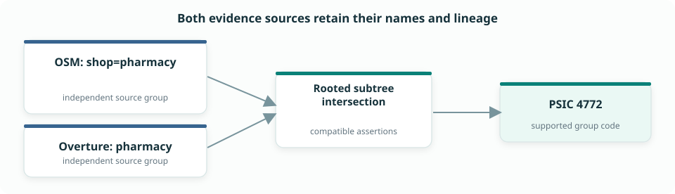
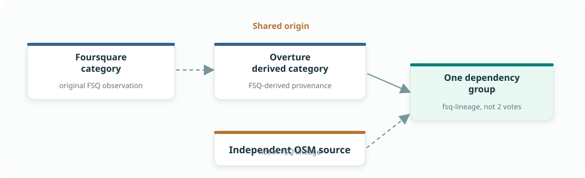

One example, three outcomes
The easiest way to understand the system is to run a few small, explicitly illustrative records through its decision semantics. We will keep the same PSIC Rev. 5 hierarchy and vary only the evidence.
Case A — Two compatible source categories
An OpenPlaces entity contains overture_category = pharmacy and osm_category = shop=pharmacy. Suppose the corresponding accepted category assertions refer to PSIC 4772 in the loaded hierarchy.

- The source adapter keeps OSM
key=valueand Overture label distinct; their dependency groups are independent unless provenance says otherwise. - The crosswalk looks up each source's category, match type, and PSIC version.
- Fusion intersects the rooted subtrees. The surviving supported code is 4772; this is not an inferred deeper subclass.
- The output records the code, level, source list, status, and accepted-rule flags.
When a single category supports only a division, the output must remain at that division unless another accepted assertion narrows it.
Case B — Two sources, one lineage
Suppose the record has Foursquare evidence and an Overture label explicitly recorded as derived from Foursquare (overture_has_foursquare_provenance = true). Both may describe banking. They are not two independent confirmations.

If compatible, the records may narrow one another. If disjoint, the same-lineage conflict is flagged rather than converted into a fraudulent consensus. The worklist and run outputs preserve the provider identities.
Case C — Disjoint economic activities
A canonical entity combines osm_category = amenity=bank and overture_category = pharmacy. When accepted PSIC mappings point into unrelated branches, there is no defensible single principal activity.
- A forced subclass would silently discard a source contradiction.
- A common high-level ancestor may be too broad to explain either activity.
- The production result conservatively reports
CONFLICTwith candidate codes, orREVIEW_ENTITY_MATCHif the input carries entity-match warning indicators.
This does not change OpenPlaces identity automatically; it asks the upstream matching process to be reviewed.
Case D — Administrative function is not the service administered
DepEd Schools Division Office may be annotated with amenity=school. A narrow administrative name can support 84120, rather than treating the office as a school delivering education. But this correction is guarded: a reviewed exact category, unrelated activity evidence, or disjoint named rules can block it into review.
A hospital office, a school itself, and a government agency may be related institutionally while carrying different principal economic activities. Public ownership is a separate question, and does not follow from PSIC 84120 alone.
A practical comparison you can reproduce
$places = "..\openplaces-ph\data\output\areas_iloilo\canonical_pois.parquet"
placetype classify $places --schemes psic --llm none --output-dir output\reviewed
if ($LASTEXITCODE -ne 0) { throw "Reviewed run failed" }
placetype classify $places --schemes psic --llm none --no-reviewed-psic --output-dir output\legacy
if ($LASTEXITCODE -ne 0) { throw "Legacy run failed" }
Compare code, status, flags and candidate_codes by canonical_id. More coded rows are not necessarily more correct; the adjudicated comparison in evaluation is required to assess correctness.
Implementation & tests: test_reviewed_psic_transfer.py · classifier.py.